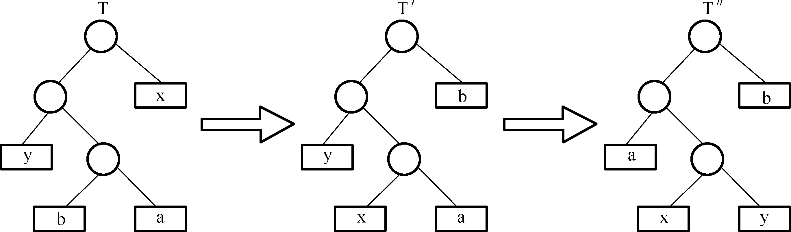
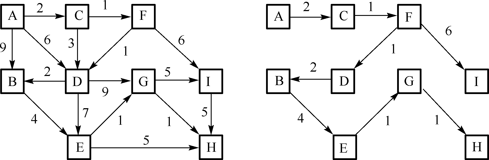
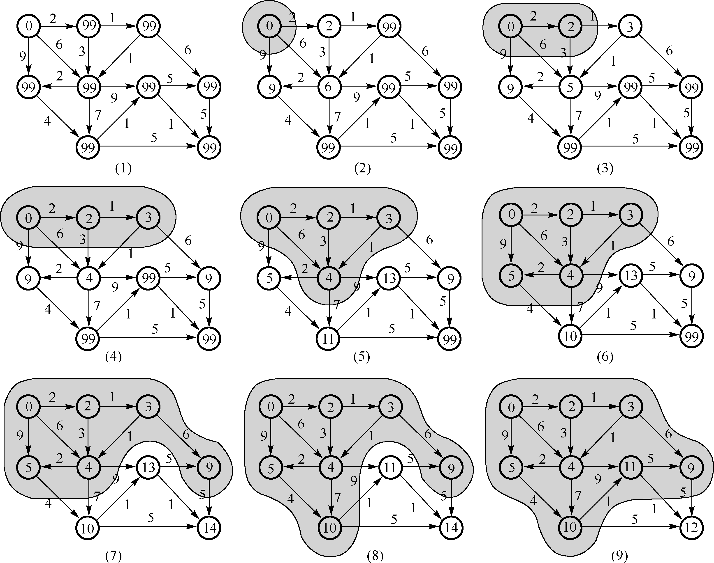
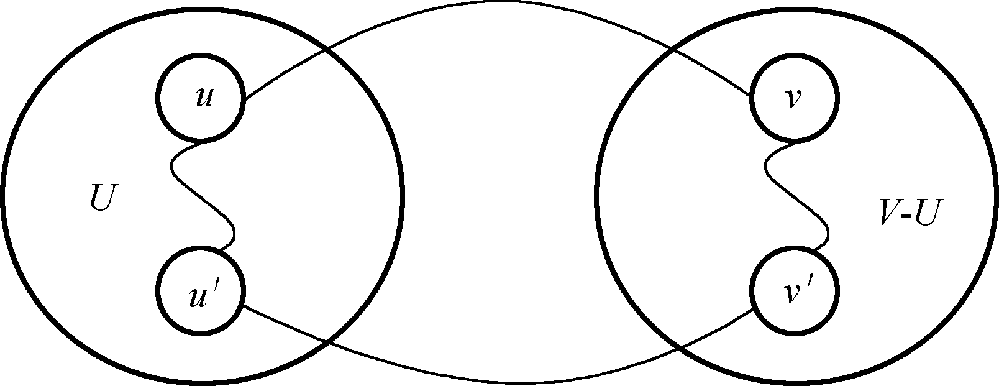
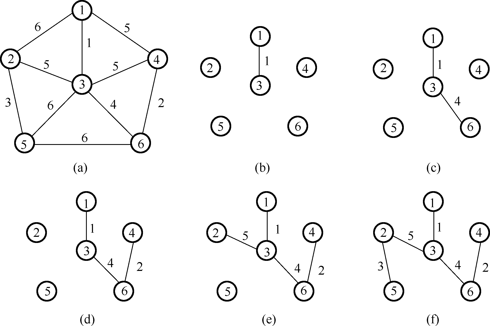

贪心算法
贪心算法 ：在多阶段决策过程中，以当前状态为基础，根据特定贪心准则/优化测度进行局部最优决策，而不考虑各种可能的整体情况。自顶向下，以迭代做出相继的贪心选择，每做一次贪心选择就将所求问题简化为一个规模更小的子问题。
分解：将原问题求解过程划分为连续的若干决策阶段；
决策：在每一个决策阶段依据贪心策略进行贪心决策，得到局部最优解，并缩小待求解问题规模；
合并：将各个决策阶段的局部最优解合并为原问题的全局可行解。
⭐
1 2 3 4 5 6 7 S = {}; while (notSolution (S)) { x = Select (C); S = S + {x}; C = C - Collection (x); } return S;
找零钱问题 ：
贪心要素
具体
候选集合 C \text {C} C
各种面值的货币
解集合 S \text {S} S
已付出的货币
可行解函数 Solution \text {Solution} Solution
已付出的货币面值等于应付金额
选择函数 Select \text {Select} Select
从候选集合中选择面值最大且不超过应付金额的货币
什么样的问题能用贪心算法求解？ ⇔ \Leftrightarrow ⇔
贪心选择性质 ：所求问题的整体最优解可以通过一系列局部最优的决策得到。
（数学归纳法）证明过程：
基础步：第 1 \text {1} 1 1 \text {1} 1
归纳步：如果第 k \text {k} k k+1 \text {k+1} k+1
（交换论证法）证明过程：
基础步：给定任意一个整体最优解，把第 1 \text {1} 1
交换步：证明上述交换过程可以循环进行。
活动安排问题
题目描述
假设某社团某一天要组织 n n n E = { 1 , 2 , ⋯ , n } E=\{1,2, \cdots, n\} E = { 1 , 2 , ⋯ , n } i i i s i s_i s i f i f_i f i s i < f i s_i < f_i s i < f i i i i [ s i , f i ] [s_i,f_i] [ s i , f i ] [ s i , f i ] [s_i,f_i] [ s i , f i ] [ s j , f j ] [s_j,f_j] [ s j , f j ] i i i j j j n n n
输入数据
多组测试数据。每组测试数据包含三行：
第一行输入活动数目 n ( n < 1000 ) n(n<1000) n ( n < 1 0 0 0 )
第二行输入 n n n
第三行输入 n n n
这里规定所有的时间取值范围为 1 1 1 1000 1000 1 0 0 0
输出数据
最多安排的相容活动数目，每组测试数据输出一行。
样例输入
1 2 3 11 1 0 3 3 5 5 6 2 8 8 12 4 6 5 8 7 9 10 13 11 12 14
样例输出
问题分析
策略一：选择具有最早开始时间 ，而且不与已安排的活动冲突的活动。
策略二：选择具有最短使用时间 ，而且不与已安排的活动冲突的活动。
策略三：选择具有最早结束时间 ，而且不与已安排的活动冲突的活动。
综合策略一和二 ⇒ \Rightarrow ⇒
算法实现与分析
设计思路：
所有活动按照结束时间进行升序排序
E [ 1 ] . f ⩽ E [ 2 ] . f ⩽ ⋯ ⩽ E [ n ] . f \text {E}[1] . f \leqslant \text {E}[2] . f \leqslant \cdots \leqslant \text {E}[n] . f
E [ 1 ] . f ⩽ E [ 2 ] . f ⩽ ⋯ ⩽ E [ n ] . f
选择 E [ 1 ] \text {E}[1] E [ 1 ] E [ 1 ] = t r u e \text {E}[1]=true E [ 1 ] = t r u e
依次扫描 E [ i ] \text {E}[i] E [ i ]
1 2 3 4 5 6 if startTime (E[i]) > lastSelectedEnd then A[i] = true lastSelectedEnd = endTime (E[i]) else A[i] = false end for
🏠
1 2 3 4 5 6 7 8 9 10 11 12 13 14 15 16 17 18 19 20 21 22 23 24 25 26 27 28 29 30 31 32 33 34 35 36 37 38 39 40 41 42 43 44 45 #include <iostream> #include <cstdio> #define MaxEvent 1000 int s[MaxEvent];int f[MaxEvent];int greedyEvebntSchedule (int , int *, int *) int greedyEvebntSchedule (int n, int *timeStart, int *timeFinish) int selected, ans = 0 ; for (int i = 0 ; i < n; i++) { for (int j = 0 ; j + 1 < n; j++) if (timeFinish[j] > timeFinish[j + 1 ]) { std::swap (timeFinish[j], timeFinish[j + 1 ]); std::swap (timeStart[j], timeStart[j + 1 ]); } } selected = 0 ; ans = 1 ; for (int i = 1 ; i < n; i++) if (timeStart[i] >= timeFinish[selected]) { selected = i; ans++; } return ans; } int main () int n, ans; while (scanf ("%d" , &n) != EOF) { for (int i = 0 ; i < n; i++) scanf ("%d" , &s[i]); for (int i = 0 ; i < n; i++) scanf ("%d" , &f[i]); ans = greedyEvebntSchedule (n, s, f); printf ("%d\n" , ans); } return 0 ; }
👉 O ( n 2 ) O\left(n^2\right) O ( n 2 )
对于样例：
i i i 1
2
3
4
5
6
7
8
9
10
11
E [ i ] , s E[i],s E [ i ] , s 1
3
0
5
3
5
6
8
8
2
12
E [ i ] , f E[i],f E [ i ] , f 4
5
6
7
8
9
10
11
12
13
14
活动 1 ：开始时间 1，结束时间 4。由于这是第一个活动，我们选择它。目前选中的活动：{1}。活动 2 ：开始时间 3，结束时间 5。它的开始时间早于活动 1 的结束时间，因此不能选择它。目前选中的活动：{1}。活动 3 ：开始时间 0，结束时间 6。它的结束时间晚于活动 1 的结束时间，但开始时间早于活动 1 的结束时间，因此不能选择它。目前选中的活动：{1}。活动 4 ：开始时间 5，结束时间 7。它的开始时间晚于活动 1 的结束时间，因此我们选择它。目前选中的活动：{1, 4}。活动 5 ：开始时间 3，结束时间 8。它的开始时间早于活动 4 的结束时间，因此不能选择它。目前选中的活动：{1, 4}。活动 6 ：开始时间 5，结束时间 9。它的开始时间早于活动 4 的结束时间，因此不能选择它。目前选中的活动：{1, 4}。活动 7 ：开始时间 6，结束时间 10。它的开始时间晚于活动 4 的结束时间，因此我们选择它。目前选中的活动：{1, 4, 7}。活动 8 ：开始时间 8，结束时间 11。它的开始时间早于活动 7 的结束时间，因此不能选择它。目前选中的活动：{1, 4, 7}。活动 9 ：开始时间 8，结束时间 12。它的开始时间晚于活动 7 的结束时间，因此我们选择它。目前选中的活动：{1, 4, 7, 9}。活动 10 ：开始时间 2，结束时间 13。它的开始时间早于活动 9 的结束时间，因此不能选择它。目前选中的活动：{1, 4, 7, 9}。活动 11 ：开始时间 12，结束时间 14。它的开始时间晚于活动 9 的结束时间，因此我们选择它。目前选中的活动：{1, 4, 7, 9, 11}。
最终选中的活动集合是 {1, 4, 7, 9, 11}。
命题：算法 GreedySelector \text {GreedySelector} GreedySelector k \text {k} k k \text {k} k i 1 = 1 , i 2 , ⋯ , i k i_1=1, i_2, \cdots, i_k i 1 = 1 , i 2 , ⋯ , i k i 1 = 1 , i 2 , ⋯ , i k i_1=1, i_2, \cdots, i_k i 1 = 1 , i 2 , ⋯ , i k
证明：
集合 S \text {S} S { 1 , 2 , ⋯ , n } \{1,2, \cdots, n\} { 1 , 2 , ⋯ , n }
最优解 A \text {A} A { j 1 , j 2 , ⋯ , j m } \left\{j_1, j_2, \cdots, j_m\right\} { j 1 , j 2 , ⋯ , j m }
基础步：k = 1 k=1 k = 1
如果 j 1 = 1 j_1=1 j 1 = 1 A \text {A} A 1 1 1
如果 j 1 ≠ 1 j_1 \neq 1 j 1 = 1 1 1 1 j 1 j_1 j 1 A ′ \text {A}^{\prime} A ′
A ′ = { A ′ − { j 1 } } ∪ { 1 } \text {A}^{\prime}=\left\{\text {A}^{\prime}-\left\{j_1\right\}\right\} \cup\{1\}
A ′ = { A ′ − { j 1 } } ∪ { 1 }
因为活动 1 1 1 j 1 j_1 j 1 ⇒ \Rightarrow ⇒ A ′ \text {A}^{\prime} A ′ A \text {A} A
那么 A ′ \text {A}^{\prime} A ′
归纳步：假设对于正整数 k \text {k} k
存在一个最优解，
A = { i 1 = 1 , i 2 , ⋯ , i k } ∪ B \text {A}=\left\{i_1=1, i_2, \cdots, i_k\right\} \cup \text {B}
A = { i 1 = 1 , i 2 , ⋯ , i k } ∪ B
又 S ′ = { j ∣ E [ j ] . s ⩾ E [ i k ] . f , j ∈ S } \text {S}^{\prime}=\left\{j \mid \text {E}[j] . s \geqslant \text {E}\left[i_k\right] . f, j \in \text {S}\right\} S ′ = { j ∣ E [ j ] . s ⩾ E [ i k ] . f , j ∈ S }
B \text {B} B S ′ \text {S}^{\prime} S ′ B ′ \text {B}^{\prime} B ′ ∣ B ′ ∣ > ∣ B ∣ \left|\text {B}^{\prime}\right|>|\text {B}| ∣ ∣ ∣ B ′ ∣ ∣ ∣ > ∣ B ∣
A ′ = { i 1 = 1 , i 2 , ⋯ , i k } ∪ B ′ \text {A}^{\prime}=\left\{i_1=1, i_2, \cdots, i_k\right\} \cup \text {B}^{\prime}
A ′ = { i 1 = 1 , i 2 , ⋯ , i k } ∪ B ′
与 A \text {A} A
假设 B ′ \text {B}^{\prime} B ′ S ′ \text {S}^{\prime} S ′ 基础步
B ′ ′ = { i k + 1 , ⋯ } \text {B}^{\prime \prime}=\left\{i_{k+1}, \cdots\right\}
B ′ ′ = { i k + 1 , ⋯ }
（i k + 1 i_{k+1} i k + 1 S ′ \text {S}^{\prime} S ′
又 B \text {B} B B ′ \text {B}^{\prime} B ′ S ′ \text {S}^{\prime} S ′ ∣ B ′ ′ ∣ = ∣ B ∣ \left|\text {B}^{\prime \prime}\right|=|\text {B}| ∣ ∣ ∣ B ′ ′ ∣ ∣ ∣ = ∣ B ∣
A ′ = { i 1 = 1 , i 2 , ⋯ , i k } ∪ B ′ ′ = { i 1 = 1 , i 2 , ⋯ , i k , i k + 1 } ∪ { B ′ ′ − { i k + 1 } } \text {A}^{\prime}=\left\{i_1=1, i_2, \cdots, i_k\right\} \cup \text {B}^{\prime \prime}=\left\{i_1=1, i_2, \cdots, i_k, i_{k+1}\right\} \cup\left\{\text {B}^{\prime \prime}-\left\{i_{k+1}\right\}\right\}
A ′ = { i 1 = 1 , i 2 , ⋯ , i k } ∪ B ′ ′ = { i 1 = 1 , i 2 , ⋯ , i k , i k + 1 } ∪ { B ′ ′ − { i k + 1 } }
且 ∣ A ′ ∣ = ∣ A ∣ \left|\text {A}^{\prime}\right|=|\text {A}| ∣ ∣ ∣ A ′ ∣ ∣ ∣ = ∣ A ∣ A ′ \text {A}^{\prime} A ′ GreedySelector \text {GreedySelector} GreedySelector k + 1 k+1 k + 1
小数背包问题
题目描述
给定 n n n i i i W i W_i W i V i V_i V i C C C i i i i i i
输入数据
多组测试数据。每组测试包括三行：
第一行输入物品的总数 n ( n < 1000 ) n(n<1000) n ( n < 1 0 0 0 ) C ( C < 1000 ) \text {C}(\text {C}<1000) C ( C < 1 0 0 0 )
第二行输入 n n n
第三行输入物品的价值。
输出数据
装入背包的总价值，每组测试数据输出一行。
样例输入
1 2 3 3 50 10 20 30 60 100 120
样例输出
问题分析
小数背包模型：
max ∑ i = 1 n v i x i \max \sum_{i=1}^n v_i x_i
max i = 1 ∑ n v i x i
st. { ∑ i = 1 n w i x i ⩽ C 0 ⩽ x i ⩽ 1 , 1 ⩽ i ⩽ n \text { st. }\left\{\begin{array}{l}
\sum_{i=1}^n w_i x_i \leqslant C \\
0 \leqslant x_i \leqslant 1,1 \leqslant i \leqslant n
\end{array}\right.
st. { ∑ i = 1 n w i x i ⩽ C 0 ⩽ x i ⩽ 1 , 1 ⩽ i ⩽ n
策略一：在不超出当前背包的剩余容量前提下，选择具有价值最大的物品 。
策略二：在不超出当前背包的剩余容量前提下，选择具有重量最轻的物品 。
策略三：在不超出当前背包的剩余容量前提下，选择具有价值率（价值除以重量）最大的物品 。
算法实现与分析
设计思路：
所有物品按照价值率进行降序排序
itme [ 1 ] . v ⩾ itme [ 2 ] . v ⩾ ⋯ ⩾ itme [ n ] . v \text {itme}[1] . v \geqslant \text {itme}[2] . v \geqslant \cdots \geqslant \text {itme}[n] . v
itme [ 1 ] . v ⩾ itme [ 2 ] . v ⩾ ⋯ ⩾ itme [ n ] . v
选择 itme [ 1 ] \text {itme}[1] itme [ 1 ] itme [ 1 ] . w \text {itme}[1] . w itme [ 1 ] . w
依次扫描 itme [ i ] \text {itme}[i] itme [ i ] itme [ i ] . w \text {itme}[i] . w itme [ i ] . w
🏠
1 2 3 4 5 6 7 8 9 10 11 12 13 14 15 16 17 18 19 20 21 22 23 24 25 26 27 28 29 30 31 32 33 34 35 36 37 38 39 40 41 42 43 44 45 46 47 48 49 50 51 #include <iostream> #include <cstdio> #include <algorithm> #define MaxItem 1000 struct item { int weight; int value; bool operator <(const item &another) const { return value / (1.0 * weight) > another.value / (1.0 * another.weight); } }; item items[MaxItem]; double greedyKnapsack (int , int , item *) double greedyKnapsack (int n, int capacity, item *items) double ans = 0 ; std::sort (items, items + n); for (int i = 0 ; i < n; i++) if (capacity >= items[i].weight) { ans += items[i].value; capacity -= items[i].weight; } else { ans += capacity * (items[i].value * 1.0 ) / items[i].weight; break ; } return ans; } int main () int n, capacity; double ans; while (scanf ("%d %d" , &n, &capacity) != EOF) { for (int i = 0 ; i < n; i++) scanf ("%d" , &(items[i].weight)); for (int i = 0 ; i < n; i++) scanf ("%d" , &(items[i].value)); ans = greedyKnapsack (n, capacity, items); printf ("%.2f\n" , ans); } return 0 ; }
👉 O ( n log n ) O(n \log n) O ( n log n )
最优前缀码
题目描述
二元前缀码 ：在计算机中需要用 0 , 1 0,1 0 , 1
C = { x 1 , x 2 , ⋯ , x n } C=\left\{x_1, x_2, \cdots, x_n\right\} C = { x 1 , x 2 , ⋯ , x n } n n n
f ( x i ) , ( i = 1 , 2 , ⋯ , n ) f(x_i),(i=1,2,\cdots,n) f ( x i ) , ( i = 1 , 2 , ⋯ , n ) x i x_i x i
d ( x i ) , ( i = 1 , 2 , ⋯ , n ) d(x_i),(i=1,2,\cdots,n) d ( x i ) , ( i = 1 , 2 , ⋯ , n ) x i x_i x i
平均码长 ：
B ( T ) = ∑ i = 1 n f ( x i ) d ( x i ) ∑ i = 1 n f ( x i ) B(T)=\frac{\sum_{i=1}^n f\left(x_i\right) d\left(x_i\right)}{\sum_{i=1}^n f\left(x_i\right)}
B ( T ) = ∑ i = 1 n f ( x i ) ∑ i = 1 n f ( x i ) d ( x i )
最优前缀码 ：平均码长最小的前缀码方案。
定长编码 ：字符集的每个字符用相同码长的代码表示。
变长编码 ：字符集的每个字符用不同码长的代码表示。
输入数据
多组测试数据。每组测试数据包含两行：
第一行输入字符集中字符的个数 n ( n < 1000 ) n(n<1000) n ( n < 1 0 0 0 )
第二行输入每个字符出现的频次 < 1000 <1000 < 1 0 0 0
输出数据
最优前缀码的平均码长，保留 4 4 4
样例输入
样例输出
问题分析
哈夫曼编码 ：给频率高的字符编较短的代码，频率低的字符编较长的代码，把编码映射成二叉树。
贪心策略：把频率高的字符分配给靠近根结点（较浅）的叶子结点，把频率低的字符放置在远离根结点（较深）的叶子结点。
算法实现与分析
1 2 3 4 5 6 7 8 9 10 11 12 13 14 15 16 17 18 19 20 21 22 23 24 25 26 27 28 29 30 31 32 33 34 35 36 37 38 39 40 41 42 43 44 45 46 47 48 49 50 51 52 53 54 #include <cstdio> #include <vector> #include <queue> #include <iostream> #include <algorithm> #define MaxChar 1000 int freq[MaxChar];double haffmanCoding (int , int *) struct cmp { bool operator () (const int &x, const int &y) { return x > y; } }; double haffmanCoding (int n, int *freq) int total = 0 , sumFreq = 0 ; std::priority_queue<int , std::vector<int >, cmp> heap; for (int i = 0 ; i < n; i++) { total += freq[i]; heap.push (freq[i]); } while (heap.size () > 1 ) { int jointFreq = 0 ; for (int i = 0 ; i < 2 ; i++) { jointFreq += heap.top (); heap.pop (); } sumFreq += jointFreq; heap.push (jointFreq); } double avgFreq = sumFreq / (1.0 * total); return avgFreq; } int main () int n; while (scanf ("%d" , &n) != EOF) { for (int i = 0 ; i < n; i++) scanf ("%d" , &freq[i]); double codeLength = haffmanCoding (n, freq); printf ("%.4f\n" , codeLength); } return 0 ; }
👉 O ( n log n ) O(n \log n) O ( n log n )
基础步：设字符集 C C C c c c f ( c ) f(c) f ( c ) x x x y y y C C C C C C x x x y y y
证明：
a a a b b b T T T
⇒ \Rightarrow ⇒ x x x y y y T ′ ′ T^{\prime \prime} T ′ ′
又 x x x y y y C C C
f ( x ) ⩽ f ( y ) ⩽ f ( a ) ⩽ f ( b ) f(x) \leqslant f(y) \leqslant f(a) \leqslant f(b)
f ( x ) ⩽ f ( y ) ⩽ f ( a ) ⩽ f ( b )
交换叶子节点 b b b x x x a a a y y y T → T ′ → T ′ ′ T \rightarrow T^{\prime} \rightarrow T^{\prime \prime} T → T ′ → T ′ ′

T T T T ′ T^{\prime} T ′
B ( T ) − B ( T ′ ) = ∑ c ∈ C f ( c ) d T ( c ) − ∑ c ∈ C f ( c ) d T ′ ( c ) = f ( x ) d T ( x ) + f ( b ) d T ( b ) − f ( x ) d T ′ ( x ) − f ( b ) d T ′ ( b ) = f ( x ) d T ( x ) + f ( b ) d T ( b ) − f ( x ) d T ( b ) − f ( b ) d T ( x ) = ( f ( b ) − f ( x ) ) ( d T ( b ) − d T ( x ) ) ⩾ 0 \begin{aligned}
B(T)-B\left(T^{\prime}\right) & =\sum_{c \in C} f(c) d_T(c)-\sum_{c \in C} f(c) d_{T^{\prime}}(c) \\
& =f(x) d_T(x)+f(b) d_T(b)-f(x) d_{T^{\prime}}(x)-f(b) d_{T^{\prime}}(b) \\
& =f(x) d_T(x)+f(b) d_T(b)-f(x) d_T(b)-f(b) d_T(x) \\
& =(f(b)-f(x))\left(d_T(b)-d_T(x)\right) \geqslant 0
\end{aligned}
B ( T ) − B ( T ′ ) = c ∈ C ∑ f ( c ) d T ( c ) − c ∈ C ∑ f ( c ) d T ′ ( c ) = f ( x ) d T ( x ) + f ( b ) d T ( b ) − f ( x ) d T ′ ( x ) − f ( b ) d T ′ ( b ) = f ( x ) d T ( x ) + f ( b ) d T ( b ) − f ( x ) d T ( b ) − f ( b ) d T ( x ) = ( f ( b ) − f ( x ) ) ( d T ( b ) − d T ( x ) ) ⩾ 0
其中 d T ′ ( x ) = d T ( b ) , d T ′ ( b ) = d T } ( x ) d_{T^{\prime}}(x)=d_T(b), d_{T^{\prime}}(b)=d_{T\}}(x) d T ′ ( x ) = d T ( b ) , d T ′ ( b ) = d T } ( x ) ∑ i = 1 n f ( x i ) \sum_{i=1}^n f\left(x_i\right) ∑ i = 1 n f ( x i )
T ′ T^{\prime} T ′ T ′ ′ T^{\prime \prime} T ′ ′
B ( T ′ ) − B ( T ′ ′ ) = ∑ c ∈ C f ( c ) d T ′ ( c ) − ∑ c ∈ C f ( c ) d T ′ ′ ( c ) = f ( y ) d T ′ ( y ) + f ( a ) d T ′ ( a ) − f ( y ) d T ′ ′ ( y ) − f ( a ) d T ′ ′ ( a ) = f ( y ) d T ′ ( y ) + f ( a ) d T ′ ( a ) − f ( y ) d T ′ ( a ) − f ( a ) d T ′ ( y ) = ( f ( a ) − f ( y ) ) ( d T ′ ( a ) − d T ′ ( y ) ) ⩾ 0 \begin{aligned}
B(T^{\prime})-B\left(T^{\prime \prime}\right) & =\sum_{c \in C} f(c) d_{T^{\prime}}(c)-\sum_{c \in C} f(c) d_{T^{\prime \prime}}(c) \\
& =f(y) d_{T^{\prime}}(y)+f(a) d_{T^{\prime}}(a)-f(y) d_{T^{\prime \prime}}(y)-f(a) d_{T^{\prime \prime}}(a) \\
& =f(y) d_{T^{\prime}}(y)+f(a) d_{T^{\prime}}(a)-f(y) d_{T^{\prime}}(a)-f(a) d_{T^{\prime}}(y) \\
& =(f(a)-f(y))\left(d_{T^{\prime}}(a)-d_{T^{\prime}}(y)\right) \geqslant 0
\end{aligned}
B ( T ′ ) − B ( T ′ ′ ) = c ∈ C ∑ f ( c ) d T ′ ( c ) − c ∈ C ∑ f ( c ) d T ′ ′ ( c ) = f ( y ) d T ′ ( y ) + f ( a ) d T ′ ( a ) − f ( y ) d T ′ ′ ( y ) − f ( a ) d T ′ ′ ( a ) = f ( y ) d T ′ ( y ) + f ( a ) d T ′ ( a ) − f ( y ) d T ′ ( a ) − f ( a ) d T ′ ( y ) = ( f ( a ) − f ( y ) ) ( d T ′ ( a ) − d T ′ ( y ) ) ⩾ 0
其中 d T ′ ′ ( y ) = d T ′ ( a ) , d T ′ ′ ( a ) = d T ′ ( y ) d_{T^{\prime \prime}}(y)=d_{T^{\prime}}(a), d_{T^{\prime \prime}}(a)=d_{T^{\prime}}(y) d T ′ ′ ( y ) = d T ′ ( a ) , d T ′ ′ ( a ) = d T ′ ( y ) ∑ i = 1 n f ( x i ) \sum_{i=1}^n f\left(x_i\right) ∑ i = 1 n f ( x i )
综合前面两步：
B ( T ) ⩾ B ( T ′ ) ⩾ B ( T ′ ′ ) B(T) \geqslant B\left(T^{\prime}\right) \geqslant B\left(T^{\prime \prime}\right)
B ( T ) ⩾ B ( T ′ ) ⩾ B ( T ′ ′ )
又二叉树 T T T
B ( T ) ⩽ B ( T ′ ′ ) B(T) \leqslant B\left(T^{\prime \prime}\right)
B ( T ) ⩽ B ( T ′ ′ )
因此
B ( T ) = B ( T ′ ′ ) B(T)=B\left(T^{\prime \prime}\right)
B ( T ) = B ( T ′ ′ )
二叉树 T ′ ′ T^{\prime \prime} T ′ ′ x x x y y y
交换步：二叉树 T T T C C C
单源最短路径
题目描述
给定带权有向图 G ( V , E ) G(V,E) G ( V , E ) V V V
输入数据
多组测试数据。
第一行输入图 G G G n n n n < 1000 n<1000 n < 1 0 0 0
后续 n n n n n n G G G i i i j j j i i i j j j − 1 -1 − 1 i i i j j j
输出数据
从源到所有其他各顶点的最短路径长度之和。每组测试数据输出一行。
样例输入
1 2 3 4 5 6 5 -1 10 -1 30 100 -1 -1 50 -1 -1 -1 -1 -1 -1 10 -1 -1 20 -1 60 -1 -1 -1 -1 -1
样例输出
问题分析
算法实现与分析
l i n k M a t r i x [ u ] [ x ] linkMatrix[u][x] l i n k M a t r i x [ u ] [ x ]
l o w L R [ x ] lowLR[x] l o w L R [ x ] x x x x x x x x x
p r e V [ x ] = u preV[x]=u p r e V [ x ] = u x x x u u u x x x
S = { u } S=\{u\} S = { u } v ∈ V − S = { ⋯ } v \in V-S=\{ \cdots \} v ∈ V − S = { ⋯ }
l o w L R [ v ] = l i n k M a t r i x [ u ] [ v ] , p r e V [ v ] = u s t . ( u , v ) ∈ E \begin{aligned} & lowLR[v] = linkMatrix[u][v],preV[v]=u \\ & st. (u, v) \in E\end{aligned}
l o w L R [ v ] = l i n k M a t r i x [ u ] [ v ] , p r e V [ v ] = u s t . ( u , v ) ∈ E
在 V − S V-S V − S L o w L R [ ] LowLR[] L o w L R [ ] t t t L o w L R [ t ] = min { l o w L R [ x ] ∣ x ∈ ( V − S ) } LowLR[t]=\min \{lowLR[x] \mid x \in(V-S)\} L o w L R [ t ] = min { l o w L R [ x ] ∣ x ∈ ( V − S ) }
将顶点 t t t S S S V − S V-S V − S L o w L R [ ] LowLR[] L o w L R [ ]
l o w L R [ x ] = l o w L R [ t ] + l i n k M a t r i x [ t ] [ x ] , p r e V [ x ] = t s t . l o w L R [ x ] > l o w L R [ t ] + l i n k M a t r i x [ t ] [ x ] \begin{aligned} & lowLR[x]=lowLR[t]+linkMatrix[t][x],preV[x]=t \\ & st. lowLR[x]>lowLR[t]+linkMatrix[t][x]\end{aligned}
l o w L R [ x ] = l o w L R [ t ] + l i n k M a t r i x [ t ] [ x ] , p r e V [ x ] = t s t . l o w L R [ x ] > l o w L R [ t ] + l i n k M a t r i x [ t ] [ x ]
循环 2 2 2 3 3 3 V − S V-S V − S

求解步骤如下

（2）t = A t=A t = A
S S S V − S V-S V − S
A A A B , C , D , E , F , G , H , I B,C,D,E,F,G,H,I B , C , D , E , F , G , H , I
A A A L o w L R [ ] LowLR[] L o w L R [ ] p r e V [ ] preV[] p r e V [ ]
B B B 9 9 9 A A A A → B A \rightarrow B A → B
C C C 2 2 2 A A A A → C A \rightarrow C A → C
D D D 6 6 6 A A A A → D A \rightarrow D A → D
E E E + ∞ +\infty + ∞ A A A ∗ * ∗
F F F + ∞ +\infty + ∞ A A A ∗ * ∗
G G G + ∞ +\infty + ∞ A A A ∗ * ∗
H H H + ∞ +\infty + ∞ A A A ∗ * ∗
I I I + ∞ +\infty + ∞ A A A ∗ * ∗
（3）t = C t=C t = C
S S S V − S V-S V − S
A , C A,C A , C B , D , E , F , G , H , I B,D,E,F,G,H,I B , D , E , F , G , H , I
D D D l o w L R [ D ] = 6 lowLR[D]=6 l o w L R [ D ] = 6
l o w L R [ C ] + l i n k M a t r i x [ C ] [ D ] = 2 + 3 = 5 lowLR[C]+linkMatrix[C][D]=2+3=5 l o w L R [ C ] + l i n k M a t r i x [ C ] [ D ] = 2 + 3 = 5 l o w L R [ D ] = 5 lowLR[D]=5 l o w L R [ D ] = 5 p r e V [ D ] = C preV[D]=C p r e V [ D ] = C
F F F l o w L R [ F ] = + ∞ lowLR[F]=+\infty l o w L R [ F ] = + ∞
l o w L R [ C ] + l i n k M a t r i x [ C ] [ F ] = 2 + 1 = 3 lowLR[C]+linkMatrix[C][F]=2+1=3 l o w L R [ C ] + l i n k M a t r i x [ C ] [ F ] = 2 + 1 = 3 l o w L R [ F ] = 3 lowLR[F]=3 l o w L R [ F ] = 3 p r e V [ F ] = C preV[F]=C p r e V [ F ] = C
A A A L o w L R [ ] LowLR[] L o w L R [ ] p r e V [ ] preV[] p r e V [ ]
B B B 9 9 9 A A A A → B A \rightarrow B A → B
C C C 2 2 2 A A A A → C A \rightarrow C A → C
D D D 5 5 5 C C C A → C → D A \rightarrow C \rightarrow D A → C → D
E E E + ∞ +\infty + ∞ ∗ * ∗ ∗ * ∗
F F F 3 3 3 C C C A → C → F A \rightarrow C \rightarrow F A → C → F
G G G + ∞ +\infty + ∞ ∗ * ∗ ∗ * ∗
H H H + ∞ +\infty + ∞ ∗ * ∗ ∗ * ∗
I I I + ∞ +\infty + ∞ ∗ * ∗ ∗ * ∗
（4）t = F t=F t = F
S
V-S
A , C , F A,C,F A , C , F B , D , E , G , H , I B,D,E,G,H,I B , D , E , G , H , I
D D D l o w L R [ D ] = 5 lowLR[D]=5 l o w L R [ D ] = 5
l o w L R [ F ] + l i n k M a t r i x [ F ] [ D ] = 3 + 1 = 4 lowLR[F]+linkMatrix[F][D]=3+1=4 l o w L R [ F ] + l i n k M a t r i x [ F ] [ D ] = 3 + 1 = 4 l o w L R [ D ] = 4 lowLR[D]=4 l o w L R [ D ] = 4 p r e V [ D ] = F preV[D]=F p r e V [ D ] = F
I I I l o w L R [ I ] = + ∞ lowLR[I]=+\infty l o w L R [ I ] = + ∞
l o w L R [ F ] + l i n k M a t r i x [ F ] [ I ] = 3 + 6 = 9 lowLR[F]+linkMatrix[F][I]=3+6=9 l o w L R [ F ] + l i n k M a t r i x [ F ] [ I ] = 3 + 6 = 9 l o w L R [ I ] = 9 lowLR[I]=9 l o w L R [ I ] = 9 p r e V [ I ] = F preV[I]=F p r e V [ I ] = F
A A A L o w L R [ ] LowLR[] L o w L R [ ] p r e V [ ] preV[] p r e V [ ]
B B B 9 9 9 A A A A → B A \rightarrow B A → B
C C C 2 2 2 A A A A → C A \rightarrow C A → C
D D D 4 4 4 F F F A → C → F → D A \rightarrow C \rightarrow F \rightarrow D A → C → F → D
E E E + ∞ +\infty + ∞ ∗ * ∗ ∗ * ∗
F F F 3 3 3 C C C A → C → F A \rightarrow C \rightarrow F A → C → F
G G G + ∞ +\infty + ∞ ∗ * ∗ ∗ * ∗
H H H + ∞ +\infty + ∞ ∗ * ∗ ∗ * ∗
I I I 9 9 9 F F F A → C → F → I A \rightarrow C \rightarrow F \rightarrow I A → C → F → I
（5）t = D t=D t = D
S
V-S
A , C , D , F A,C,D,F A , C , D , F B , E , G , H , I B,E,G,H,I B , E , G , H , I
B B B l o w L R [ B ] = 9 lowLR[B]=9 l o w L R [ B ] = 9
l o w L R [ D ] + l i n k M a t r i x [ D ] [ B ] = 4 + 2 = 6 lowLR[D]+linkMatrix[D][B]=4+2=6 l o w L R [ D ] + l i n k M a t r i x [ D ] [ B ] = 4 + 2 = 6 l o w L R [ B ] = 6 lowLR[B]=6 l o w L R [ B ] = 6 p r e V [ B ] = D preV[B]=D p r e V [ B ] = D
E E E l o w L R [ E ] = + ∞ lowLR[E]=+\infty l o w L R [ E ] = + ∞
l o w L R [ D ] + l i n k M a t r i x [ D ] [ E ] = 4 + 7 = 11 lowLR[D]+linkMatrix[D][E]=4+7=11 l o w L R [ D ] + l i n k M a t r i x [ D ] [ E ] = 4 + 7 = 1 1 l o w L R [ E ] = 11 lowLR[E]=11 l o w L R [ E ] = 1 1 p r e V [ E ] = D preV[E]=D p r e V [ E ] = D
G G G l o w L R [ G ] = + ∞ lowLR[G]=+\infty l o w L R [ G ] = + ∞
l o w L R [ D ] + l i n k M a t r i x [ D ] [ G ] = 4 + 9 = 13 lowLR[D]+linkMatrix[D][G]=4+9=13 l o w L R [ D ] + l i n k M a t r i x [ D ] [ G ] = 4 + 9 = 1 3 l o w L R [ G ] = 13 lowLR[G]=13 l o w L R [ G ] = 1 3 p r e V [ G ] = D preV[G]=D p r e V [ G ] = D
A A A L o w L R [ ] LowLR[] L o w L R [ ] p r e V [ ] preV[] p r e V [ ]
B B B 6 6 6 D D D A → C → F → D → B A \rightarrow C \rightarrow F \rightarrow D \rightarrow B A → C → F → D → B
C C C 2 2 2 A A A A → C A \rightarrow C A → C
D D D 4 4 4 F F F A → C → F → D A \rightarrow C \rightarrow F \rightarrow D A → C → F → D
E E E 11 11 1 1 D D D A → C → F → D → E A \rightarrow C \rightarrow F \rightarrow D \rightarrow E A → C → F → D → E
F F F 3 3 3 C C C A → C → F A \rightarrow C \rightarrow F A → C → F
G G G 13 13 1 3 D D D A → C → F → D → G A \rightarrow C \rightarrow F \rightarrow D \rightarrow G A → C → F → D → G
H H H + ∞ +\infty + ∞ ∗ * ∗ ∗ * ∗
I I I 9 9 9 F F F A → C → F → I A \rightarrow C \rightarrow F \rightarrow I A → C → F → I
（6）t = B t=B t = B
S
V-S
A , B , C , D , F A,B,C,D,F A , B , C , D , F E , G , H , I E,G,H,I E , G , H , I
E E E l o w L R [ E ] = 11 lowLR[E]=11 l o w L R [ E ] = 1 1
l o w L R [ B ] + l i n k M a t r i x [ B ] [ E ] = 6 + 4 = 10 lowLR[B]+linkMatrix[B][E]=6+4=10 l o w L R [ B ] + l i n k M a t r i x [ B ] [ E ] = 6 + 4 = 1 0 l o w L R [ D ] = 10 lowLR[D]=10 l o w L R [ D ] = 1 0 p r e V [ E ] = B preV[E]=B p r e V [ E ] = B
A A A L o w L R [ ] LowLR[] L o w L R [ ] p r e V [ ] preV[] p r e V [ ]
B B B 6 6 6 D D D A → C → F → D → B A \rightarrow C \rightarrow F \rightarrow D \rightarrow B A → C → F → D → B
C C C 2 2 2 A A A A → C A \rightarrow C A → C
D D D 4 4 4 F F F A → C → F → D A \rightarrow C \rightarrow F \rightarrow D A → C → F → D
E E E 11 11 1 1 D D D A → C → F → D → E A \rightarrow C \rightarrow F \rightarrow D \rightarrow E A → C → F → D → E
F F F 3 3 3 C C C A → C → F A \rightarrow C \rightarrow F A → C → F
G G G 13 13 1 3 D D D A → C → F → D → G A \rightarrow C \rightarrow F \rightarrow D \rightarrow G A → C → F → D → G
H H H + ∞ +\infty + ∞ ∗ * ∗ ∗ * ∗
I I I 9 9 9 F F F A → C → F → I A \rightarrow C \rightarrow F \rightarrow I A → C → F → I
（7）t = I t=I t = I
S
V-S
A , B , C , D , F , I A,B,C,D,F,I A , B , C , D , F , I E , G , H E,G,H E , G , H
H H H l o w L R [ H ] = + ∞ lowLR[H]=+\infty l o w L R [ H ] = + ∞
l o w L R [ I ] + l i n k M a t r i x [ I ] [ H ] = 9 + 5 = 14 lowLR[I]+linkMatrix[I][H]=9+5=14 l o w L R [ I ] + l i n k M a t r i x [ I ] [ H ] = 9 + 5 = 1 4 l o w L R [ H ] = 14 lowLR[H]=14 l o w L R [ H ] = 1 4 p r e V [ H ] = I preV[H]=I p r e V [ H ] = I
A A A L o w L R [ ] LowLR[] L o w L R [ ] p r e V [ ] preV[] p r e V [ ]
B B B 6 6 6 D D D A → C → F → D → B A \rightarrow C \rightarrow F \rightarrow D \rightarrow B A → C → F → D → B
C C C 2 2 2 A A A A → C A \rightarrow C A → C
D D D 4 4 4 F F F A → C → F → D A \rightarrow C \rightarrow F \rightarrow D A → C → F → D
E E E 11 11 1 1 D D D A → C → F → D → E A \rightarrow C \rightarrow F \rightarrow D \rightarrow E A → C → F → D → E
F F F 3 3 3 C C C A → C → F A \rightarrow C \rightarrow F A → C → F
G G G 13 13 1 3 D D D A → C → F → D → G A \rightarrow C \rightarrow F \rightarrow D \rightarrow G A → C → F → D → G
H H H 14 14 1 4 I I I A → C → F → I → H A \rightarrow C \rightarrow F \rightarrow I \rightarrow H A → C → F → I → H
I I I 9 9 9 F F F A → C → F → I A \rightarrow C \rightarrow F \rightarrow I A → C → F → I
（8）t = E t=E t = E
S
V-S
A , B , C , D , E , F , I A,B,C,D,E,F,I A , B , C , D , E , F , I G , H G,H G , H
G G G l o w L R [ G ] = 13 lowLR[G]=13 l o w L R [ G ] = 1 3
l o w L R [ E ] + l i n k M a t r i x [ E ] [ G ] = 11 + 1 = 12 lowLR[E]+linkMatrix[E][G]=11+1=12 l o w L R [ E ] + l i n k M a t r i x [ E ] [ G ] = 1 1 + 1 = 1 2 l o w L R [ G ] = 12 lowLR[G]=12 l o w L R [ G ] = 1 2 p r e V [ G ] = E preV[G]=E p r e V [ G ] = E
H H H l o w L R [ H ] = 14 lowLR[H]=14 l o w L R [ H ] = 1 4
l o w L R [ E ] + l i n k M a t r i x [ E ] [ H ] = 11 + 5 = 16 lowLR[E]+linkMatrix[E][H]=11+5=16 l o w L R [ E ] + l i n k M a t r i x [ E ] [ H ] = 1 1 + 5 = 1 6
A A A L o w L R [ ] LowLR[] L o w L R [ ] p r e V [ ] preV[] p r e V [ ]
B B B 6 6 6 D D D A → C → F → D → B A \rightarrow C \rightarrow F \rightarrow D \rightarrow B A → C → F → D → B
C C C 2 2 2 A A A A → C A \rightarrow C A → C
D D D 4 4 4 F F F A → C → F → D A \rightarrow C \rightarrow F \rightarrow D A → C → F → D
E E E 11 11 1 1 D D D A → C → F → D → E A \rightarrow C \rightarrow F \rightarrow D \rightarrow E A → C → F → D → E
F F F 3 3 3 C C C A → C → F A \rightarrow C \rightarrow F A → C → F
G G G 13 13 1 3 E E E A → C → F → D → E → G A \rightarrow C \rightarrow F \rightarrow D \rightarrow E \rightarrow G A → C → F → D → E → G
H H H 14 14 1 4 I I I A → C → F → I → H A \rightarrow C \rightarrow F \rightarrow I \rightarrow H A → C → F → I → H
I I I 9 9 9 F F F A → C → F → I A \rightarrow C \rightarrow F \rightarrow I A → C → F → I
（9）t = G t=G t = G
S
V-S
A , B , C , D , E , F , G , I A,B,C,D,E,F,G,I A , B , C , D , E , F , G , I H H H
H H H l o w L R [ H ] = 14 lowLR[H]=14 l o w L R [ H ] = 1 4
l o w L R [ G ] + l i n k M a t r i x [ G ] [ H ] = 13 + 5 = 18 lowLR[G]+linkMatrix[G][H]=13+5=18 l o w L R [ G ] + l i n k M a t r i x [ G ] [ H ] = 1 3 + 5 = 1 8
A A A L o w L R [ ] LowLR[] L o w L R [ ] p r e V [ ] preV[] p r e V [ ]
B B B 6 6 6 D D D A → C → F → D → B A \rightarrow C \rightarrow F \rightarrow D \rightarrow B A → C → F → D → B
C C C 2 2 2 A A A A → C A \rightarrow C A → C
D D D 4 4 4 F F F A → C → F → D A \rightarrow C \rightarrow F \rightarrow D A → C → F → D
E E E 11 11 1 1 D D D A → C → F → D → E A \rightarrow C \rightarrow F \rightarrow D \rightarrow E A → C → F → D → E
F F F 3 3 3 C C C A → C → F A \rightarrow C \rightarrow F A → C → F
G G G 13 13 1 3 E E E A → C → F → D → E → G A \rightarrow C \rightarrow F \rightarrow D \rightarrow E \rightarrow G A → C → F → D → E → G
H H H 14 14 1 4 I I I A → C → F → I → H A \rightarrow C \rightarrow F \rightarrow I \rightarrow H A → C → F → I → H
I I I 9 9 9 F F F A → C → F → I A \rightarrow C \rightarrow F \rightarrow I A → C → F → I
1 2 3 4 5 6 7 8 9 10 11 12 13 14 15 16 17 18 19 20 21 22 23 24 25 26 27 28 29 30 31 32 33 34 35 36 37 38 39 40 41 42 43 44 45 46 47 48 49 50 51 52 53 54 55 56 57 58 59 60 61 62 63 64 65 #include <cstdio> #include <cstring> #define INF 0x03F3F3F3F #define MaxV 100 int linkMatrix[MaxV][MaxV];int preV[MaxV];int LowLR[MaxV];int visited[MaxV];void Dijkstra (int , int ) void Dijkstra (int n, int u) memset (visited, 0 , sizeof (visited)); LowLR[u] = 0 ; preV[u] = -1 ; visited[u] = 1 ; for (int i = 1 ; i < n; i++) { LowLR[i] = linkMatrix[u][i]; preV[i] = u; } int selectV = u; for (int i = 1 ; i < n; i++) { for (int j = 0 ; j < n; j++) { int newCost = LowLR[selectV] + linkMatrix[selectV][j]; if (visited[j] == 0 && newCost < LowLR[j]) { LowLR[j] = newCost; preV[j] = selectV; } } int min = INF; for (int j = 0 ; j < n; j++) if (visited[j] == 0 && LowLR[j] < min) { min = LowLR[j]; selectV = j; } visited[selectV] = 1 ; } } int main () int n; while (scanf ("%d" , &n) != EOF) { for (int i = 0 ; i < n; i++) for (int j = 0 ; j < n; j++) { scanf ("%d" , &linkMatrix[i][j]); if (linkMatrix[i][j] == -1 ) linkMatrix[i][j] = INF; } Dijkstra (n, 0 ); int totalCost = 0 ; for (int i = 0 ; i < n; i++) totalCost += LowLR[i]; printf ("%d\n" , totalCost); } return 0 ; }
最小生成树
题目描述
设 G = ( V , E ) G=(V,E) G = ( V , E ) E E E ( v , w ) (v,w) ( v , w ) C ( v , w ) C(v,w) C ( v , w ) G G G G ′ G^{\prime} G ′ G G G G ′ G^{\prime} G ′ G G G G G G G G G
输入数据
多组测试数据。每组测试数据
第一行输入图 G G G n ( n < 1000 ) n(n<1000) n ( n < 1 0 0 0 )
后续 n n n G G G C C C i i i j j j j ≤ i j \leq i j ≤ i ( i , j ) (i,j) ( i , j ) − 1 -1 − 1 i i i j j j
输出数据
最小生成树权重之和，每组测试数据输出一行。
样例输入
1 2 3 4 5 6 7 6 0 6 0 1 5 0 5 -1 5 0 -1 3 6 -1 0 -1 -1 4 2 6 0
样例输出
问题分析
最小生成树（M i n i m u m S p a n n i n g T r e e s Minimum \ Spanning \ Trees M i n i m u m S p a n n i n g T r e e s M S T MST M S T ：设 G = ( V , E ) G=(V,E) G = ( V , E ) U U U V V V ( u , v ) ∈ E (u,v) \in E ( u , v ) ∈ E u ∈ U , v ∈ ( V − U ) u \in U,v \in (V-U) u ∈ U , v ∈ ( V − U ) ( u , v ) (u,v) ( u , v ) C ( u , v ) C(u,v) C ( u , v ) G G G ( u , v ) (u,v) ( u , v )
证明：
假设 G G G T T T ( u , v ) (u,v) ( u , v )
将边 ( u , v ) (u,v) ( u , v ) G G G T T T ( u , v ) (u,v) ( u , v ) ( u , v ) (u,v) ( u , v ) ( u ′ , v ′ ) (u^{\prime},v^{\prime}) ( u ′ , v ′ ) u ′ ∈ U u^{\prime} \in U u ′ ∈ U v ′ ∈ V − U v^{\prime} \in V-U v ′ ∈ V − U

将 ( u ′ , v ′ ) (u^{\prime},v^{\prime}) ( u ′ , v ′ ) T ′ T^{\prime} T ′ C ( u , v ) ⩽ C ( u ′ , v ′ ) C(u, v) \leqslant C\left(u^{\prime}, v^{\prime}\right) C ( u , v ) ⩽ C ( u ′ , v ′ )
因此 T ′ T^{\prime} T ′ T T T T ′ T^{\prime} T ′ G G G ( u , v ) (u,v) ( u , v )
算法实现与分析
G = ( V , E ) G=(V,E) G = ( V , E ) V = { 1 , 2 , ⋯ , n } V=\{1,2, \cdots, n\} V = { 1 , 2 , ⋯ , n }
M S T = ( U , T E ) MST=(U, TE) M S T = ( U , T E ) U ⊆ V U \subseteq V U ⊆ V T E ⊆ E TE \subseteq E T E ⊆ E
Prim
将任意顶点 u 0 u_0 u 0 U U U U = { u 0 } U=\left\{u_0\right\} U = { u 0 } T E = { } TE=\{\} T E = { }
选取满足条件的 i ∈ U i \in U i ∈ U j ∈ V − U j \in V-U j ∈ V − U ( i , j ) (i,j) ( i , j ) U U U V − U V-U V − U j j j U U U ( i , j ) (i,j) ( i , j ) T E TE T E
循环执行 2 2 2 U = V U=V U = V
得到的 U U U T E TE T E G G G
l i n k M a t r i x [ u ] [ x ] linkMatrix[u][x] l i n k M a t r i x [ u ] [ x ]
L o w C o s t [ j ] LowCost[j] L o w C o s t [ j ] i ∈ U i \in U i ∈ U j ∈ V − U j \in V-U j ∈ V − U ( i , j ) (i,j) ( i , j )
c l o s e s t [ j ] closest[j] c l o s e s t [ j ] i ∈ U i \in U i ∈ U j ∈ V − U j \in V-U j ∈ V − U ( i , j ) (i,j) ( i , j ) i i i
linkMatrix [ i ] [ j ] = { E ( i , j ) , ⟨ i , j ⟩ ∈ E ∞ \text{linkMatrix}[i][j] =
\begin{cases}
E(i, j), & \langle i, j \rangle \in E \\
\infty
\end{cases}
linkMatrix [ i ] [ j ] = { E ( i , j ) , ∞ ⟨ i , j ⟩ ∈ E
U = { u } U=\{u\} U = { u } v ∈ V − U = { ⋯ } v \in V-U=\{\cdots\} v ∈ V − U = { ⋯ }
L o w C o s t [ v ] = l i n k M a t r i x [ u ] [ v ] , c l o s e s t [ v ] = u s t . ( u , v ) ∈ E \begin{aligned} & LowCost[v]=linkMatrix[u][v],closest[v]=u \\ & st. (u, v) \in E\end{aligned}
L o w C o s t [ v ] = l i n k M a t r i x [ u ] [ v ] , c l o s e s t [ v ] = u s t . ( u , v ) ∈ E
在 V − U V-U V − U L o w C o s t [ ] LowCost[] L o w C o s t [ ] t t t L o w C o s t [ t ] = min { L o w C o s t [ x ] ∣ x ∈ ( V − U ) } LowCost[t]=\min \{LowCost[x] \mid x \in(V-U)\} L o w C o s t [ t ] = min { L o w C o s t [ x ] ∣ x ∈ ( V − U ) }
将顶点 t t t U U U V − U V-U V − U L o w C o s t [ ] LowCost[] L o w C o s t [ ] c l o s e s t [ ] closest[] c l o s e s t [ ]
L o w C o s t [ x ] = l i n k M a t r i x [ t ] [ x ] , c l o s e s t [ t ] = x s t . L o w C o s t [ x ] > l i n k M a t r i x [ t ] [ x ] \begin{aligned} & LowCost[x]=linkMatrix[t][x],closest[t]=x \\ & st. LowCost[x]>linkMatrix[t][x]\end{aligned}
L o w C o s t [ x ] = l i n k M a t r i x [ t ] [ x ] , c l o s e s t [ t ] = x s t . L o w C o s t [ x ] > l i n k M a t r i x [ t ] [ x ]
循环 3 3 3 4 4 4 V − U V-U V − U

epoch \text {epoch} epoch U U U U − V U-V U − V L o w C o s t [ ] LowCost[] L o w C o s t [ ] v i s t e d [ ] visted[] v i s t e d [ ] t t t
a a a { 1 } \{1\} { 1 } { 2 , 3 , 4 , 5 , 6 } \{2,3,4,5,6\} { 2 , 3 , 4 , 5 , 6 } [ 0 , 6 , 1 , 5 , ∞ , ∞ ] [0,6,1,5,\infty,\infty] [ 0 , 6 , 1 , 5 , ∞ , ∞ ] [ 1 , 0 , 0 , 0 , 0 , 0 ] [1,0,0,0,0,0] [ 1 , 0 , 0 , 0 , 0 , 0 ] 3 3 3
b b b { 1 , 3 } \{1,3\} { 1 , 3 } { 2 , 4 , 5 , 6 } \{2,4,5,6\} { 2 , 4 , 5 , 6 } [ 0 , 5 , 1 , 5 , 6 , 4 ] [0,5,1,5,6,4] [ 0 , 5 , 1 , 5 , 6 , 4 ] [ 1 , 0 , 1 , 0 , 0 , 0 ] [1,0,1,0,0,0] [ 1 , 0 , 1 , 0 , 0 , 0 ] 6 6 6
c c c { 1 , 3 , 6 } \{1,3,6\} { 1 , 3 , 6 } { 2 , 4 , 5 } \{2,4,5\} { 2 , 4 , 5 } [ 0 , 5 , 1 , 2 , 6 , 4 ] [0,5,1,2,6,4] [ 0 , 5 , 1 , 2 , 6 , 4 ] [ 1 , 0 , 1 , 0 , 0 , 1 ] [1,0,1,0,0,1] [ 1 , 0 , 1 , 0 , 0 , 1 ] 4 4 4
d d d { 1 , 3 , 4 , 6 } \{1,3,4,6\} { 1 , 3 , 4 , 6 } { 2 , 5 } \{2,5\} { 2 , 5 } [ 0 , 5 , 1 , 2 , 6 , 4 ] [0,5,1,2,6,4] [ 0 , 5 , 1 , 2 , 6 , 4 ] [ 1 , 0 , 1 , 1 , 0 , 1 ] [1,0,1,1,0,1] [ 1 , 0 , 1 , 1 , 0 , 1 ] 2 2 2
e e e { 1 , 2 , 3 , 4 , 6 } \{1,2,3,4,6\} { 1 , 2 , 3 , 4 , 6 } { 5 } \{5\} { 5 } [ 0 , 5 , 1 , 2 , 3 , 4 ] [0,5,1,2,3,4] [ 0 , 5 , 1 , 2 , 3 , 4 ] [ 1 , 1 , 1 , 1 , 0 , 1 ] [1,1,1,1,0,1] [ 1 , 1 , 1 , 1 , 0 , 1 ] 5 5 5
f f f { 1 , 2 , 3 , 4 , 5 , 6 } \{1,2,3,4,5,6\} { 1 , 2 , 3 , 4 , 5 , 6 } { } \{\} { } [ 0 , 5 , 1 , 2 , 3 , 4 ] [0,5,1,2,3,4] [ 0 , 5 , 1 , 2 , 3 , 4 ] [ 1 , 1 , 1 , 1 , 1 , 1 ] [1,1,1,1,1,1] [ 1 , 1 , 1 , 1 , 1 , 1 ]
1 2 3 4 5 6 7 8 9 10 11 12 13 14 15 16 17 18 19 20 21 22 23 24 25 26 27 28 29 30 31 32 33 34 35 36 37 38 39 40 41 42 43 44 45 46 47 48 49 50 51 52 53 54 55 56 57 58 59 60 61 62 63 64 65 #include <cstdio> #include <cstring> #define INF 0x03F3F3F3F #define MaxV 100 int linkMatrix[MaxV][MaxV];int closest[MaxV];int LowCost[MaxV];int visited[MaxV];int Prim (int ) int Prim (int n) memset (visited, 0 , sizeof (visited)); LowCost[0 ] = 0 ; closest[0 ] = -1 ; visited[0 ] = 1 ; for (int i = 1 ; i < n; i++) { LowCost[i] = linkMatrix[0 ][i]; closest[i] = 0 ; } int costMST = 0 ; for (int i = 1 ; i < n; i++) { int min = INF; int selectV = 0 ; for (int k = 1 ; k < n; k++) if (!visited[k] && LowCost[k] < min) { min = LowCost[k]; selectV = k; } costMST += min; visited[selectV] = 1 ; for (int k = 1 ; k < n; k++) if (!visited[k] && linkMatrix[selectV][k] < LowCost[k]) { LowCost[k] = linkMatrix[selectV][k]; closest[k] = selectV; } } return costMST; } int main () int n; while (scanf ("%d" , &n) != EOF) { for (int i = 0 ; i < n; i++) for (int j = 0 ; j < n; j++) linkMatrix[i][j] = INF; for (int i = 0 ; i < n; i++) for (int j = 0 ; j <= i; j++) { scanf ("%d" , &linkMatrix[i][j]); if (linkMatrix[i][j] == -1 ) linkMatrix[i][j] = INF; linkMatrix[j][i] = linkMatrix[i][j]; } printf ("%d\n" , Prim (n)); } return 0 ; }
👉 O ( n 2 ) O(n^2) O ( n 2 )
Kruskal
将权值最小的边 ( i , j ) (i,j) ( i , j ) T E TE T E U = { i , j } U=\left\{i,j\right\} U = { i , j } T E = { ( i , j ) } TE=\{(i,j)\} T E = { ( i , j ) }
循环执行 1 1 1 U = V U=V U = V
得到的 U U U T E TE T E G G G
使用并查集 。
1 2 3 4 5 6 7 8 9 10 11 12 13 14 15 16 17 18 19 20 21 22 23 24 25 26 27 28 29 30 31 32 33 34 35 36 37 38 39 40 41 42 43 44 45 46 47 48 49 50 51 52 53 54 55 56 57 58 59 60 61 62 63 64 65 66 67 68 69 70 71 72 73 74 75 76 77 78 79 80 81 82 83 84 85 86 87 88 89 90 91 92 93 94 95 96 97 98 99 100 101 #include <cstdio> #include <cstdlib> #define MaxV 100 #define MaxE 10000 struct edge { int u, v; int w; }; struct node { int father; int height; }; node juSet[MaxV]; edge edgeSet[MaxE]; int cmp (const void *, const void *) int Find_Set (int ) void Union (int , int ) int Kruskal (int , int ) int cmp (const void *a, const void *b) if ((*(struct edge *)a).w == (*(struct edge *)b).w) { return (*(struct edge *)a).u - (*(struct edge *)b).u; } return (*(struct edge *)a).w - (*(struct edge *)b).w; } int Find_Set (int x) while (x != juSet[x].father) x = juSet[x].father; return x; } void Union (int i, int j) if (i == j) return ; if (juSet[i].height > juSet[j].height) juSet[j].father = i; else { if (juSet[i].height == juSet[j].height) juSet[j].height++; juSet[i].father = j; } } int Kruskal (int numV, int numE) qsort (edgeSet, numE, sizeof (struct edge), cmp); int costMST = 0 ; for (int k = 0 , cntE = 0 ; k < numE; k++) { int fatherU = Find_Set (edgeSet[k].u); int fatherV = Find_Set (edgeSet[k].v); if (fatherU != fatherV) { Union (fatherU, fatherV); costMST += edgeSet[k].w; cntE++; } if (cntE == numV - 1 ) return costMST; } return costMST; } int main () int numV, numE = 0 ; while (scanf ("%d" , &numV) != EOF) { for (int i = 0 ; i < numV; i++) { juSet[i].father = i; juSet[i].height = 0 ; } for (int i = 0 ; i < numV; i++) for (int j = 0 ; j <= i; j++) { int w; scanf ("%d" , &w); if (i != j && w != -1 ) { edgeSet[numE].u = i; edgeSet[numE].v = j; edgeSet[numE].w = w; numE++; } } printf ("%d\n" , Kruskal (numV, numE)); } return 0 ; }